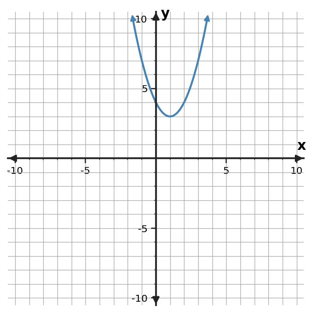

1.
For $2x^2-7x+3=0$, record $a$, $b$, and $c$ with signs.
For $2x^2-7x+3=0$, record $a$, $b$, and $c$ with signs.
For $3x^2-9x+4=0$, record $a$, $b$, and $c$ with signs.
For $x^2-11x+5=0$, record $a$, $b$, and $c$ with signs.
For $2x^2-13x+6=0$, record $a$, $b$, and $c$ with signs.
Use the quadratic formula to solve $x^2-x-6=0$.
Use the quadratic formula to solve $x^2-x-12=0$.
Use the quadratic formula to solve $x^2-x-20=0$.
Use the quadratic formula to solve $x^2-x-30=0$.
Use the quadratic formula to solve $x^2-4x+2=0$ exactly.
Use the quadratic formula to solve $x^2-6x+6=0$ exactly.
Use the quadratic formula to solve $x^2-8x+12=0$ exactly.
Use the quadratic formula to solve $x^2-10x+23=0$ exactly.
Use the graph to determine the number of real solutions of $f(x)=0$.

Complete the final column using the discriminant.
| $a$ | $b$ | $c$ | $b^2-4ac$ | # real solutions |
|---|---|---|---|---|
| $1$ | $7$ | $10$ | $9$ | ? |
| $1$ | $8$ | $16$ | $0$ | ? |
| $1$ | $4$ | $8$ | $-16$ | ? |
| $2$ | $7$ | $3$ | $25$ | ? |
A quadratic event-time model has discriminant $25$. What does this say about the number of real algebraic zero candidates before applying context restrictions?
A student substitutes $b=9$ for $2x^2-9x+3=0$. Explain the sign error and state the correct coefficient map.
Factor out the greatest common factor: $10x^3-15x^2+5x$.
Rewrite $12x^2+18x$ by factoring out a common factor that makes later work easier.
A student writes $14x^2-21x=7(2x^2-3x)$. Is this fully factored by the GCF? Explain.
Factor $-18x^3+24x^2$ using the greatest common factor.
Simplify $(5x^2+4x-6)+(3x^2-7x+5)$.
Simplify $(8x^2-3x+4)-(4x^2+5x-4)$.
Multiply $(x+5)(x-4)$.
A rectangle has side lengths $x+4$ and $x+7$. Write its area as a polynomial.